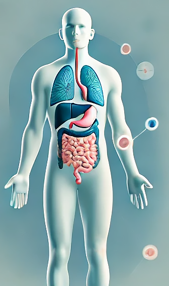

Explore the Human Microbiome!
What is the Human Microbiome?
The human microbiome is a collection of trillions of microorganisms living in and on the human body. These microbes include bacteria, fungi, viruses, and other single-celled organisms. The microbiome plays a crucial role in human health, influencing everything from digestion to immunity to mood.
Human Body Map
Hover over the different body parts to learn about the microorganisms present in each area.

Skin
Mouth
Gut
Nasal
Respiratory
0
Species in the Gut
0
Microbes in Your Body
0%
Immunity from Gut Health